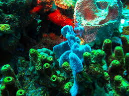

La martinique est un lieux unique pour la plongée avec une variété incroyable de créatures marines tropicales colorées et une eau d'une clarté et d'une transparence surprenantes.

Parfois vous aurez même la chance de croiser des annimaux plus rare tels que des tortues des raies ou des dauphins. Et ce sans forcément payer une plongée bouteilles car ces annimaux se rapprochent souvent des plages.